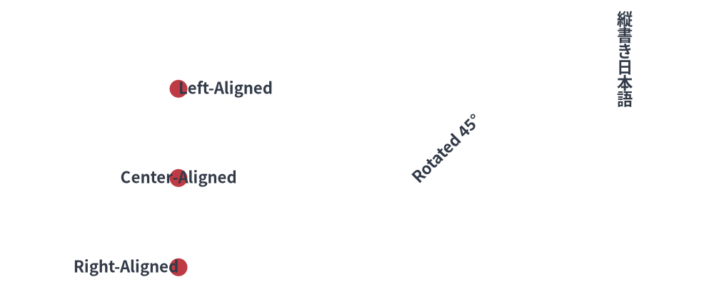
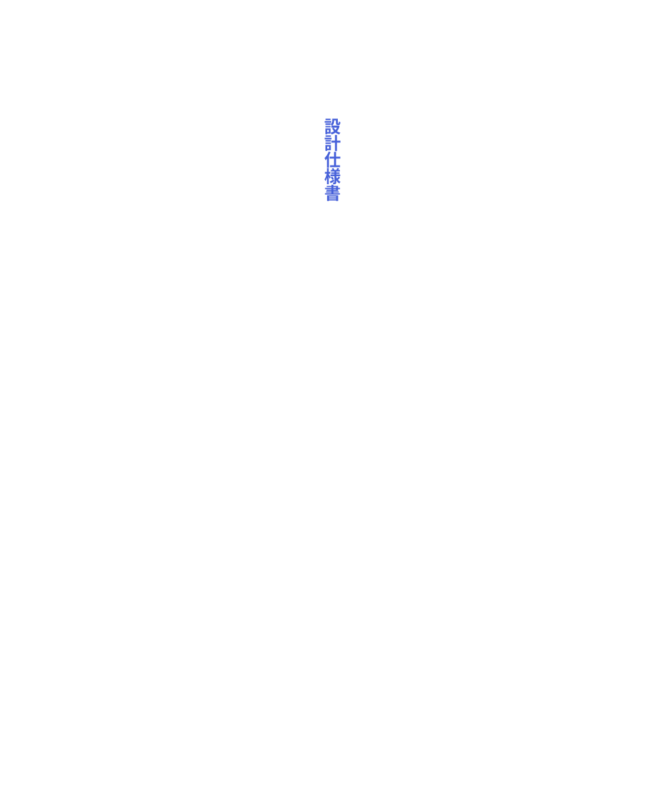
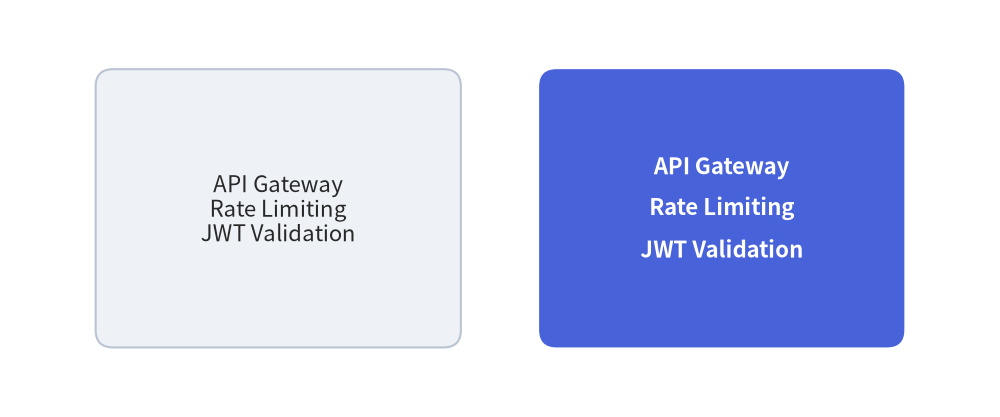

Text & Typography
Clear typography and precise alignment are essential for readable technical diagrams. Drawlib provides horizontal text, vertical CJK text, arbitrary rotation, multiline wrapping, and built-in universal typography.
1. Overview of Text Rendering

2. Text Functions
2.1. Standard Horizontal Text (text)
text(
xy: tuple[float, float],
text: str,
angle: float = 0.0,
style: Style | str | None = None,
)
xy: Coordinate anchor point(x, y).text: The string content. Use\nto insert line breaks.angle: Counter-clockwise rotation angle aroundxy.style: Text styling (color, font size, weight, alignment).
2.2. Vertical CJK Text (text_vertical)
Renders East Asian characters (Japanese, Chinese) in traditional top-to-bottom vertical layout:
from drawlib.canvas import save, setup
from drawlib.styles import Styles
from drawlib.text import text_vertical
setup(width=50, height=60)
text_vertical((25, 48), "設計仕様書", style=Styles.PrimaryBold.patch(text_size=18))
save()

3. Alignment & Line Spacing (halign, valign, text_line_spacing)
3.1. Anchor Alignments (text_halign & text_valign)
By default, text is centered horizontally and vertically at xy. You can alter the alignment using style attributes:
text_halign:"center"(default): Centered horizontally atx."left": Left edge starts atx."right": Right edge ends atx.
text_valign:"center"(default): Centered vertically aty."top": Top edge touchesy."bottom": Baseline touchesy.
from drawlib.canvas import save, setup
from drawlib.shapes import circle
from drawlib.styles import Styles
from drawlib.text import text
setup(width=100, height=35)
# Anchor pin at (30, 17.5)
circle((30, 17.5), radius=2, style=Styles.DangerFlat)
# Align text neatly to the right of the pin
text(
(35, 17.5),
"Aligned Label",
style=Styles.PrimaryBold.patch(text_halign="left", text_valign="center"),
)
save()
3.2. Multi-line Text & Line Spacing (text_line_spacing)
When rendering multi-line strings (separated by \n) inside text() or shape text="...", you can adjust the vertical line height multiplier via text_line_spacing on Style (default None uses 1.2):
from drawlib.canvas import save, setup
from drawlib.shapes import rectangle
from drawlib.styles import Styles
setup(width=115, height=48)
sample = "API Gateway\nRate Limiting\nJWT Validation"
# Default line spacing (~1.2x)
rectangle(
(32, 24),
width=42,
height=32,
r=2,
style=Styles.Neutral,
text=sample,
)
# Relaxed line spacing (1.8x)
rectangle(
(83, 24),
width=42,
height=32,
r=2,
style=Styles.PrimaryFlat,
text=sample,
text_style=Styles.WhiteBold.patch(text_line_spacing=1.8),
)
save()

4. Built-in Font System (drawlib.fonts)
Drawlib bundles high-quality, open-source Google Noto and Roboto fonts with universal multilingual CJK fallback:
| Font Class | Family | Ideal Use Case |
|---|---|---|
FontRoboto |
Roboto | Standard UI labels, titles, clean sans-serif typography. |
FontSourceCode |
Source Code Pro | Monospace code blocks, ASCII schemas, hex values. |
FontSansSerif |
Noto Sans | Universal sans-serif with fallback. |
FontSerif |
Noto Serif | Formal editorial publications and academic prints. |
FontJapanese |
Noto Sans JP | Optimized Japanese typography with Kanji/Kana balance. |
FontChinese |
Noto Sans SC | Simplified Chinese typography. |
FontKorean |
Noto Sans KR | Hangul typography. |
FontFile |
Custom TTF/OTF | Load external brand fonts from arbitrary file paths. |
Applying Fonts to Styles
from drawlib.canvas import save, setup
from drawlib.fonts import FontSourceCode
from drawlib.styles import Styles
from drawlib.text import text
setup(width=100, height=35)
# Monospace code label
text(
(50, 17.5),
"SELECT * FROM users;",
style=Styles.PrimaryBold.patch(text_font=FontSourceCode.SOURCECODEPRO, text_size=15),
)
save()